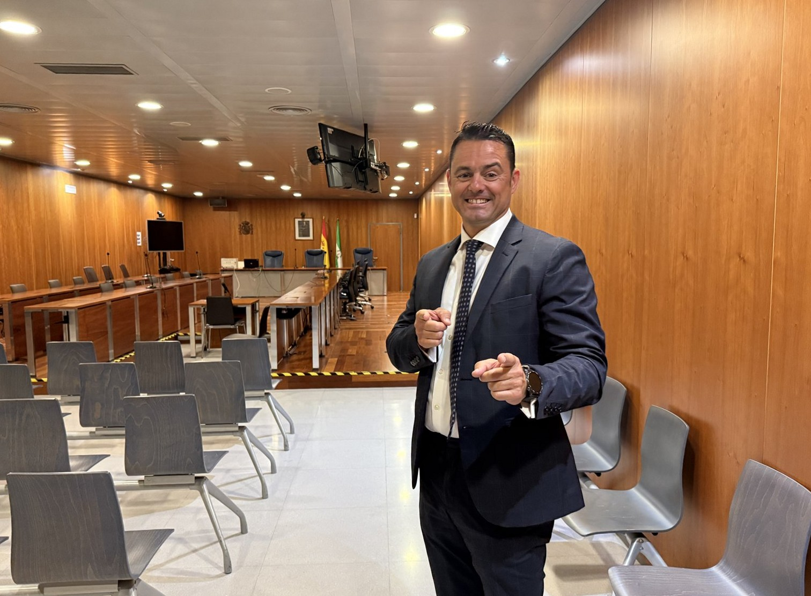
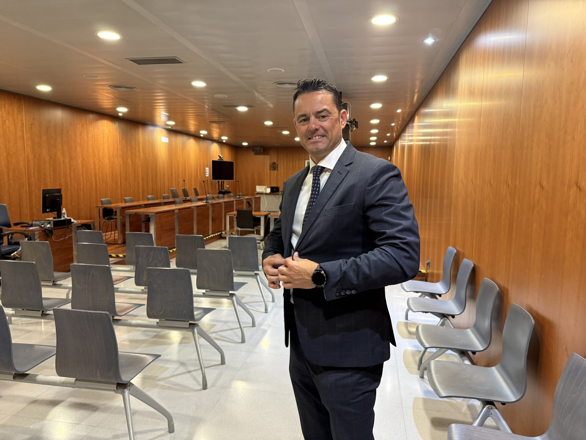
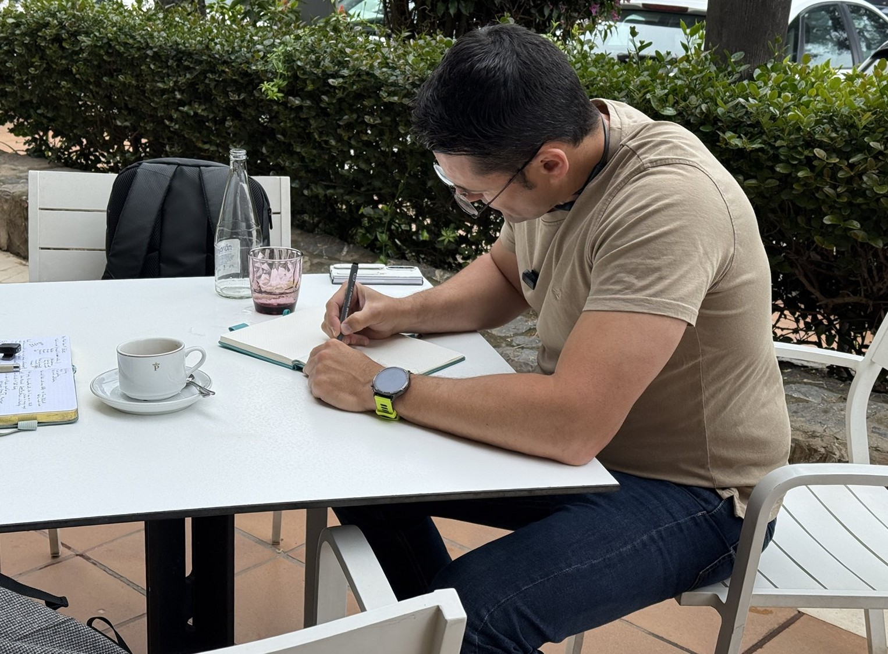
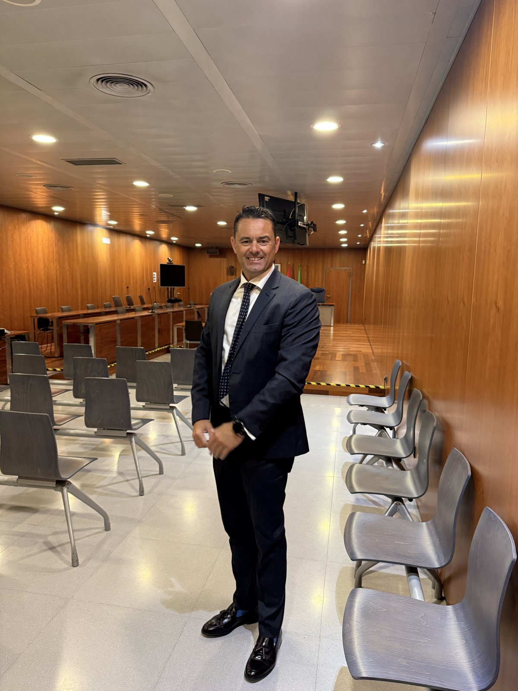
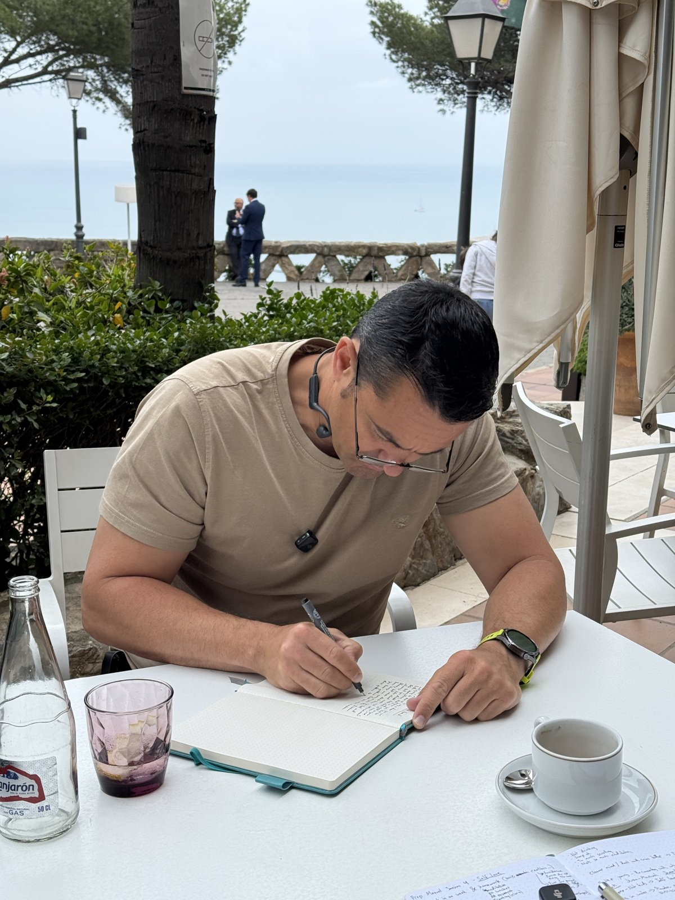

Derecho español, explicado con claridad
Una compra de vivienda, un asunto penal, un divorcio, una cuestión de residencia. Sea cual sea el motivo que te ha traído aquí, soy el abogado que está de tu lado. No un despacho anónimo. Contigo en cada paso, desde la primera llamada hasta la resolución final.

Sin tecnicismos legales, sin discurso comercial. Un minuto, grabado en un juzgado español, para que decidas si quieres tenerme de tu lado.

Compra, venta y trámites de vivienda en España, con la debida diligencia completa antes de firmar nada. Contrato de arras, notaría, impuestos, llaves.
Defensa y representación ante los tribunales de toda España, desde los Juzgados hasta el Tribunal Supremo, explicado con claridad.
Divorcios, custodia y asuntos matrimoniales tratados con cuidado, incluidas familias internacionales y acuerdos transfronterizos.
Visados, residencia y nacionalidad. La vía adecuada para tu situación, gestionada de principio a fin, con todos los trámites bien hechos.
Contratos, reclamaciones y conflictos. Negociado con firmeza primero, litigado sin dudarlo cuando hace falta.
Sociedades, operaciones y gobernanza para empresas que operan o entran en el mercado español.

"Proteger los intereses de alguien no es solo conocer la ley. Es entender a las personas, la presión y la comunicación. Esa es la parte que más me importa."
Actualizaciones claras en cada paso. Sin silencios, sin tecnicismos, sin tener que perseguir a tu propio abogado para saber novedades.
Tratas con Manuel, no con una rotación de asociados. La persona que conoces es la que te representa en el juzgado.
Una propuesta por escrito y transparente desde el principio: qué cuesta, qué ocurre y qué puedes esperar.
Un solo abogado, de principio a fin. Sin relevos, sin jerga, sin sorpresas.
Contáctanos por teléfono, email o el formulario. Cuéntanos tu situación en tu idioma. Respondemos en un día laborable.
Una lectura clara de dónde estás, tus opciones explicadas y una propuesta de honorarios cerrada antes de comprometerte.
Manuel se encarga de todo: documentos, plazos, negociaciones y juicio. Con actualizaciones regulares, sin que tengas que perseguirlas.
El resultado, qué significa y qué debes hacer después. Explicado por escrito, en tu idioma.


Abogado español multidisciplinar especializado en asesoramiento legal para clientes internacionales, particulares y empresas, en todas las áreas del derecho español, con atención en español e inglés.
Comparece habitualmente ante los tribunales de Andalucía y el resto de España, desde los Juzgados de Marbella, Algeciras, Torremolinos y Málaga hasta la Audiencia Provincial y el Tribunal Supremo en Madrid.
Amplia experiencia asesorando a clientes británicos, estadounidenses, irlandeses, escandinavos y de otras nacionalidades en asuntos transfronterizos, incluido trabajo especializado en el corredor Algeciras–Gibraltar.
Mucho más que hablar inglés.
Tras varios intentos fallidos de encontrar un abogado de habla inglesa que realmente hablara inglés, nos alegró mucho que nos presentaran a Manuel.
Resultó ser compasivo, trabajador, y realmente capaz de hacer que las cosas avanzaran.
De más de 20 abogados que contacté, el más rápido en responder.
De los más de 20 abogados de habla inglesa que contacté en España, este despacho fue el más rápido en responder, y uno de los pocos que realmente contestó.
Recurrí a este despacho después de que nuestro anterior abogado no consiguiera obtener un certificado de antecedentes penales, algo que había llevado meses sin resultado. Este despacho resolvió el asunto en cuestión de días.
Haciendo todo lo posible, y algunas cosas que parecían imposibles.
Muchas gracias a Manuel por su extraordinaria dedicación, profesionalidad, conocimiento y compromiso inquebrantable. Me ayudó a reparar una injusticia y a restablecer mi reputación profesional.
A pesar de ser agosto, Manuel hizo mucho más de lo esperado para lograr una resolución favorable.
No hay nadie como él.
Después de entrevistar a muchos abogados españoles sin quedar satisfecho, tuve la suerte de encontrar a Manuel Mateo.
Su amplio conocimiento de la ley, su profunda comprensión de mi situación viviendo en un país extranjero, y su firmeza negociando llevaron a un resultado muy favorable.
Todo se gestionó a distancia.
No sabía muy bien cómo afrontar un caso judicial menor en España, ya que resido en la República de Irlanda y solo hablo un español básico. Manuel me tranquilizó de inmediato asegurándome que se encargarían de todo. Y así fue.
Todo se gestionó a distancia, así que ni siquiera tuve que viajar.
Comunicación sencilla y clara.
Profesional y directo, siempre me mantuvo informado del proceso. Manuel habla inglés con fluidez, lo cual me ayudó mucho.
No puedo recomendarlo lo suficiente.
Con base en la Costa del Sol, trabajando en toda España. En persona en cualquier despacho, o totalmente a distancia por vídeo y teléfono, desde cualquier parte del mundo.
Calle Esperanto, 4
29007 Málaga
Avda. Ricardo Soriano, 72, Portal B, 1ª Planta · 29601 Marbella
Avda. Manuel Fraga Iribarne, 15 · 29620 Torremolinos
Avda. del Estrecho s/n, Pol. Ind. La Menacha · 11205 Algeciras
Avenida Brasil, 29, 1ª Planta
28020 Madrid
Técnicamente no, pero en la práctica es esencial. Una compraventa en España implica una diligencia debida legal completa (comprobar deudas, hipotecas, restricciones urbanísticas, cuotas de comunidad), redactar y revisar el contrato de arras, y representarte ante notario. Sin un abogado independiente revisando la operación en tu nombre, asumes todos estos riesgos personalmente.
Sí. Con un poder notarial, podemos representarte en cada fase sin que tengas que viajar. Muchos de nuestros clientes internacionales gestionan sus asuntos, desde compras de vivienda hasta procedimientos judiciales, totalmente a distancia, con actualizaciones por email y videollamada.
El NIE (Número de Identificación de Extranjero) es un número de identificación fiscal necesario para prácticamente cualquier trámite legal o financiero en España, incluida la compra de vivienda, la apertura de cuentas bancarias y el pago de impuestos. Podemos solicitarlo en tu nombre con un poder notarial, o guiarte en el trámite en un consulado español o comisaría de policía.
Los ciudadanos británicos que ya residían en España antes del 31 de diciembre de 2020 están protegidos por el Acuerdo de Retirada y pueden solicitar el TIE. Quienes llegaron después de esa fecha deben solicitar la residencia conforme a las normas generales de extranjería, que normalmente exigen acreditar ingresos suficientes o un empleo. Te asesoramos sobre la vía más adecuada para tu situación.
Cada asunto es distinto, así que no publicamos una lista de precios única. Lo que sí prometemos: recibirás una propuesta de honorarios clara y por escrito tras la primera valoración, antes de cualquier compromiso, y sin sorpresas después.
Sin tecnicismos legales. Toda consulta es confidencial, y respondemos en un día laborable.